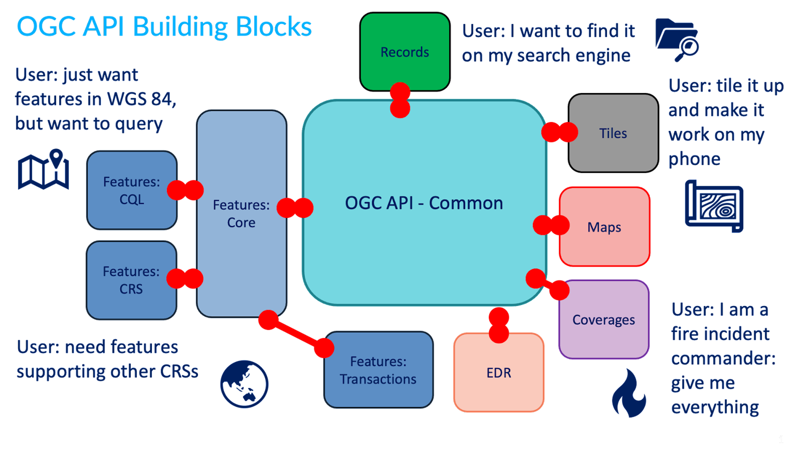
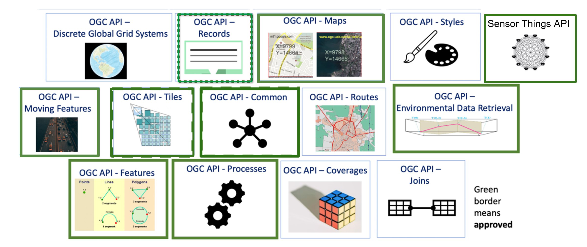

Wat zijn OGC API’s?
 Bekijk eerst dit filmpje:
Bekijk eerst dit filmpje:
Een OGC API is een gestandaardiseerde interface waarmee gebruikers en systemen geodata kunnen bevragen en bekijken via het internet. Een API, een Application Programming Interface, kan door mensen gebruikt worden om data op te vragen. Maar nog vaker worden API’s gebruikt door systemen (machines) om met elkaar te praten. Ontwikkelaars kunnen op die manier op een eenvoudige manier data van andere bronnen in hun eigen software integreren. Een API is dus een stopcontact voor data. Je hebt, in tegenstelling tot vroeger, geen specifieke kennis over geodata meer nodig om dit te kunnen.
Een OGC API volgt de API standaarden opgesteld door het Open Geospatial Consortium (OGC). Dat is een wereldwijde organisatie die open standaarden maakt voor het geo-informatiedomein. De standaard schrijft precies voor hoe de interface opgebouwd moet zijn. De OGC API standaard is een open standaard die zeer breed omarmd wordt.
Een OGC API bestaat altijd uit dezelfde onderdelen. En de OGC API kent verschillende vormen om data beschikbaar te stellen. Welke vorm je kiest, is afhankelijk van wat je precies met de geodata wil gaan doen. En voor de organisatie die de data aanbiedt met een OGC API is het afhankelijk van hoe ze de data precies beschikbaar willen stellen.
OGC API onderdelen
TO DO
Onderstaand overzicht laat zien hoe de OGC API standaard is gebouwd met bouwblokken. Al deze bouwblokken bevatten één of meerdere specificaties die door OGC zijn opgesteld en door de geocommunity zijn goedgekeurd.

Onderstaande tabel toont welke bouwblokken er zijn, toont of dit bouwblok bij PDOK is geïmplementeerd (stand: januari 2026) en waar dit bouwblok in deze leermodule wordt behandeld.
| Onderdeel | Beschrijving | Beschikbaar bij PDOK? | Leermodule |
|---|---|---|---|
| Common | De fundering voor elke OGC API | ✅ | Features en Tiles |
| Features | Vectordata | ✅ | Features |
| Tiles | Kaarttegels (visualisatie) | ✅ | Tiles |
| Styles | Visualisatieregels | ✅ | Tiles |
| Records | Metadata | ❌ | ❌ |
| Maps | Kant-en-klare kaarten en kaarttegels | ❌ | ❌ |
| Coverages | Rasterdata | ❌ | ❌ |
| EDR | Environment Data Retrieval | ❌ | ❌ |
Laten we de bouwblokken één voor één eens nader bestuderen.
Common
Het basisbouwblok dat elke OGC API minimaal nodig heeft. Dit blok bevat de landing page van een API, de API conformancepagina en de API-specificatie.
Features
Bouwblok voor het bevragen en bewerken van featuredata (vectordata). Dit bouwblok bestaat uit de volgende onderdelen:
- Part 1: Core
- Part 2: CRS voor het opslaan of bevragen van featuredata in een bepaald coördinaatreferentiesysteem;
- Part 3: Filtering voor het op basis van een filter bevragen van featuredata;
- Part 4: CRUD voor het toevoegen, vervangen, updaten en verwijderen van featuredata.
- Draft Part 5: Schemas
- Draft Part 6: Property Selection
- Draft Part 7: Geometry Simplification
- Draft Part 8: Sorting
- Draft Part 9: Text Search
- Draft Part 10: Search/Queries
Tiles
Bouwblok voor het opvragen van geodata als kaarttegels en voor het bekijken van deze data.
Styles
Bouwblok voor het aanbieden en toepassen van visualisatieregels.
Records
Bouwblok voor het doorzoeken en opvragen van metadata over geodata (bijvoorbeeld actualiteit, beschrijvingen, beperkingen, contactpersonen)
Maps
Bouwblok voor het opvragen van geodata als kant-en-klare kaart
Coverages
Bouwblok voor het opvragen van rasterdata, waarmee je ook berekeningen op celniveau kunt doen.
EDR
Bouwblok voor Environment Data Retrieval (EDR): het integraal opvragen van ruimtelijke klimaatdata die meerdere dimensies integreert. Denk aan het opvragen van luchtvochtigheid, temperatuur en neerslag in 3D door de tijd heen.

- Processes
- Moving Features
- Routes
- 3D GeoVolumes
- Joins
- Discrete Global Grid System (DGGS)
- Connected Systems